Attention narrows
Under pressure, vision tunnels. Anything off-centre gets missed.
A time-adaptive airport navigation experience
Design strategy for an adaptive experienceScope: MVP exploration
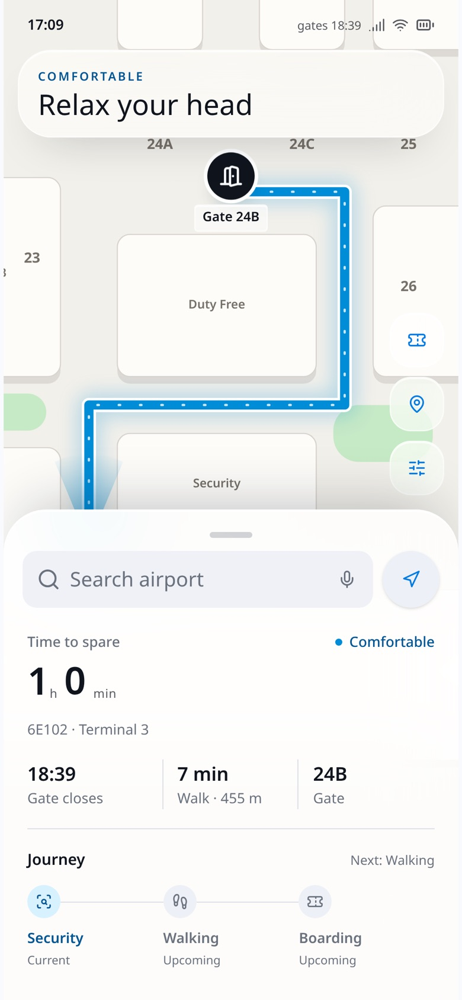
Airports optimise for information.
Passengers optimise for time.
More urgency → More information → Less clarity.
More alerts add noise.
Less on screen brings clarity back.
Under pressure, vision tunnels. Anything off-centre gets missed.
Stress shrinks working memory. Gate numbers and times slip away.
Every choice drains energy. People want one clear next step.
Buffer is the time left after security and the walk to the gate.
As it shrinks, the interface simplifies.
The full map, gate details and nearby food and shops. Browsing is safe.
Only stops along the way remain. The next step and walking time lead.
Just the route and a live countdown. Detours and extras disappear.
One instruction, full screen. The fastest path to the gate and nothing else.
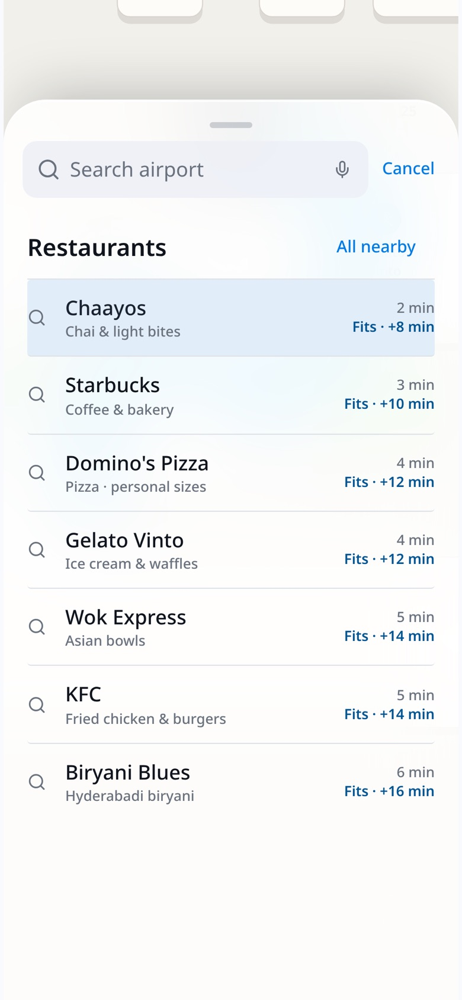
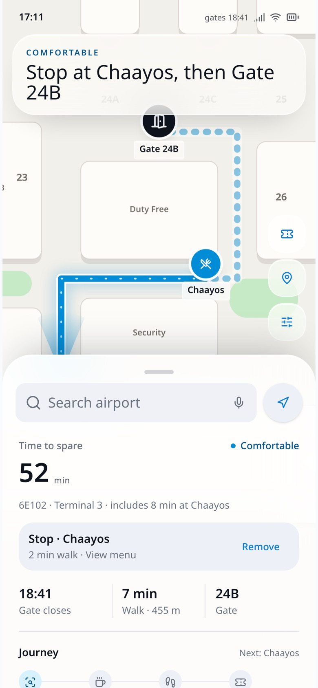
With an hour to spare, Buffer opens up. The full map, your gate and a calm journey timeline are all on screen.
Every café and restaurant shows its walk time and what it costs your buffer, so browsing stays safe.
Pick Chaayos and the route bends through it. Time to spare updates straight away: 52 minutes left.
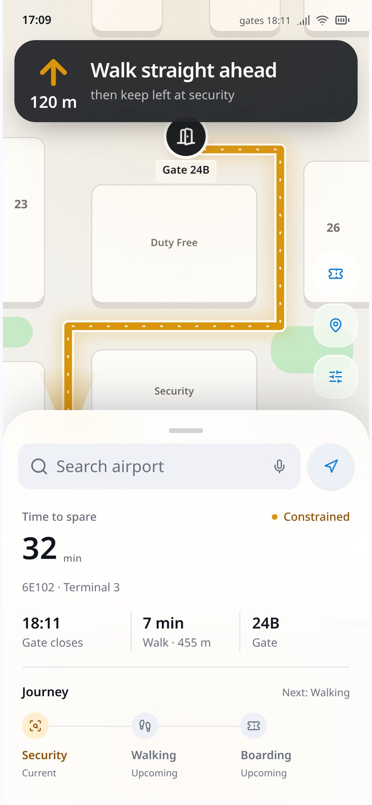
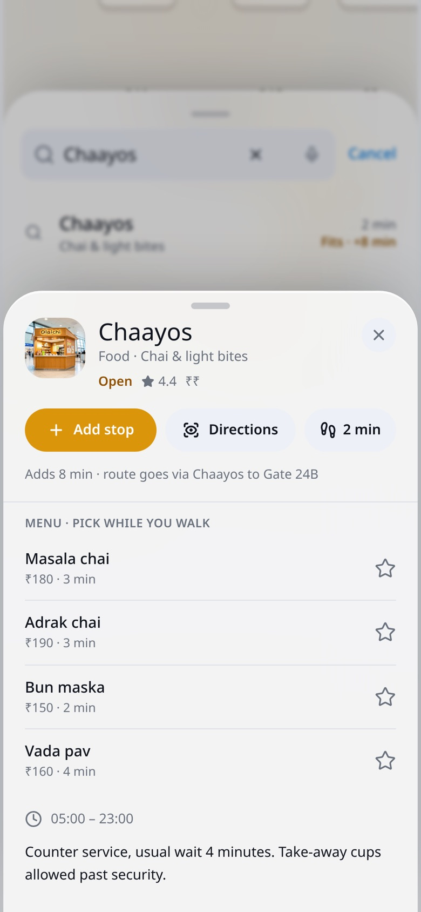
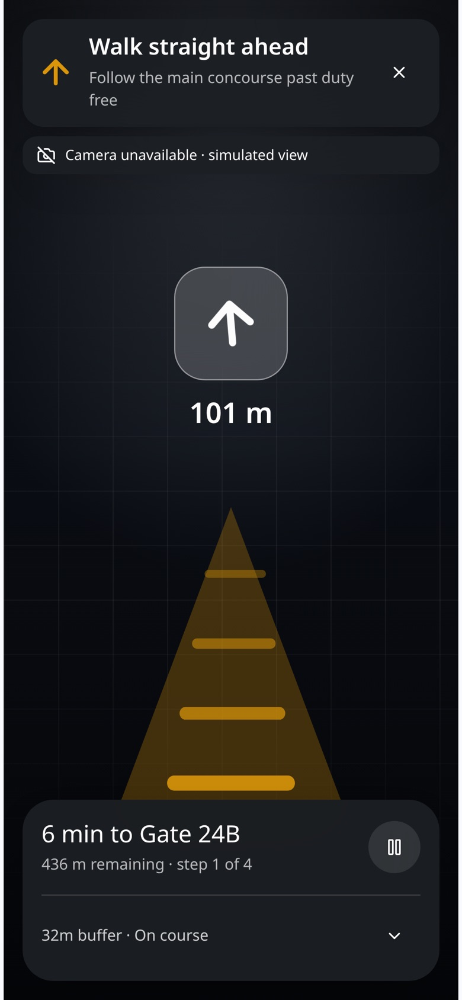
At 32 minutes, a turn-by-turn instruction moves to the top: walk straight ahead, then keep left at security.
Before you commit, a place tells you what it adds. Chaayos adds 8 minutes and stays on your route.
Raise your phone and AR draws the path ahead, counting down the metres to Gate 24B.
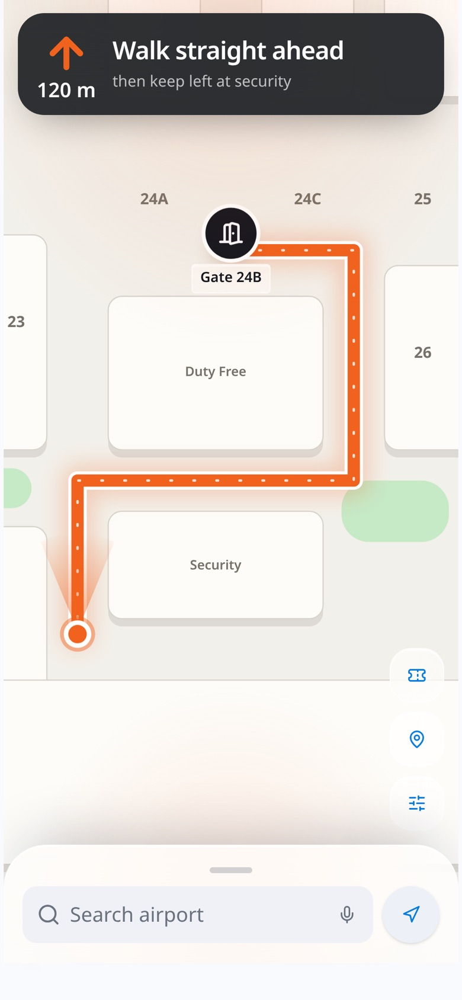
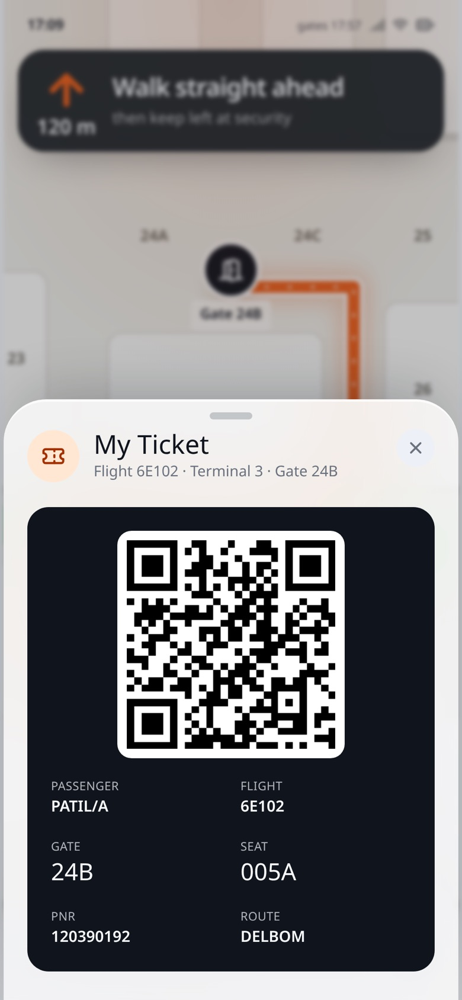
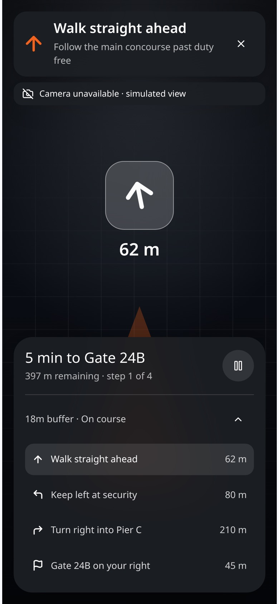
The bottom sheet folds away. What is left is the map, the route to Gate 24B and a single instruction.
Gate, seat and boarding pass sit behind one button, ready the moment you reach the desk.
Beneath the AR view, four steps to Gate 24B, each with its distance. Nothing else competes for your attention.
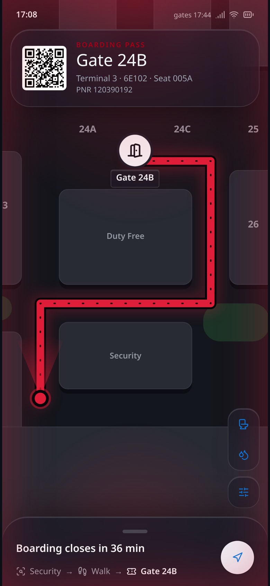
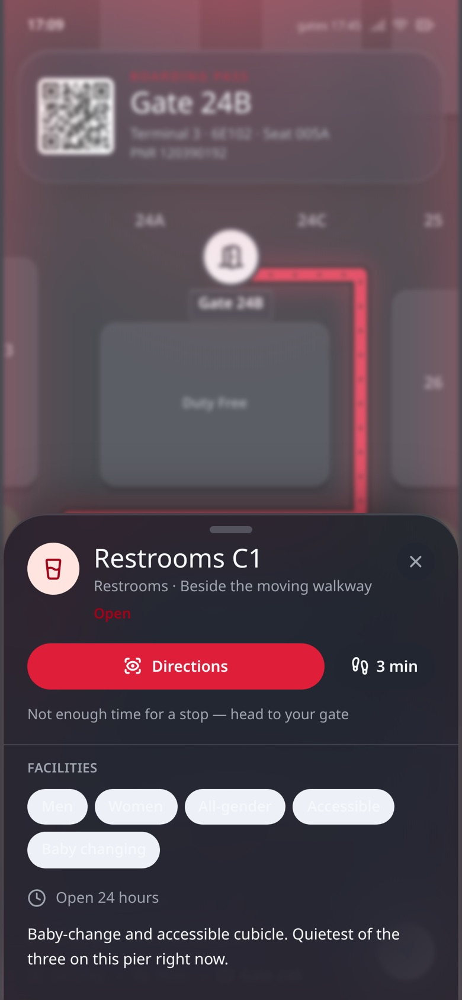
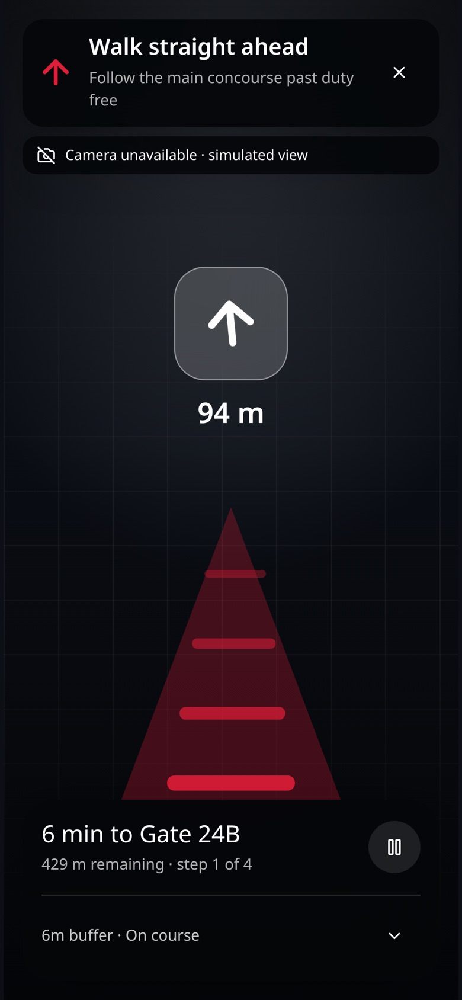
The interface goes dark and quiet. Your boarding pass and the red route to Gate 24B are all that remain.
Even a restroom check gives a straight answer: not enough time for a stop, head to your gate.
Full-screen AR: the path in front of you, six minutes to Gate 24B. Nothing to read, nothing to decide.
When urgency increases, the interface simplifies instead of shouting.
Alerts stack up as time runs out. Each one demands a glance at the worst moment.
The screen sheds detail with each state. What remains is the next step.
A ticking banner raises stress but never says what to do about it.
Content adapts to where the passenger is. Irrelevant options quietly disappear.
The final call comes when options are gone. It reacts instead of guiding.
Buffer shifts state before time runs short, so passengers move early and calmly.
The MVP does one job. It gets passengers to their gate on time. Everything else can wait. Small scope ships faster.
Airlines publish a close time and keep to it. Every countdown starts from that moment.
Queue times come from airport APIs or sensors. Accurate enough to plan around.
Gate distance and average pace give a walking time within a safe margin.
Indoor positioning places the passenger with reasonable confidence.
Interfaces shouldn’t react to events.
They should adapt to time.
Boarding close time, Security queue estimate, Walking time to gate, User location, Gate changes (if any)
If Buffer ≥ 40 min → Comfortable Mode
If Buffer between 25–40 min → Constrained Mode
If Buffer between 10–25 min → Tight Mode
If Buffer ≤ 10 min → Critical Mode
Thresholds derived from initial heuristic benchmarking.
To be tuned via real-world telemetry.
Interface density, Map prominence, Available actions, Tone of language, Colour intensity, Surface complexity
It does not switch screens, it compresses progressively.
Instead of reacting with alerts when things go wrong, the system anticipates urgency and adjusts before panic begins.
Evaluation frequency: every 30–60 seconds, or on significant event change.
A smart interface that keeps flickering between states is worse than a simple one. These rules keep it calm.
Plans change mid-journey. Buffer recalculates quietly instead of raising alarms.
Version 1 proves one idea: an interface can adapt to time.
Aims to reduce missed flights and open up contextual revenue.
Extends to trains, metros and large venues, on the same state-driven, adaptive architecture.
¹ Even a 0.5% reduction at scale can mean significant operational savings and a better passenger NPS.
² Commerce only appears when the buffer leaves room for attention.
Success means fewer missed boardings, calmer journeys, and states that change at the right moment.
Once the MVP is live, the product grows in four phases.
Navigation-first adaptation
Contextual commerce
Flow optimisation
Predictive stress modelling
The thinking beneath the surface: how the engine decides, how it stays steady when plans change, and what it takes to ship. Open any card to go deeper.
One number drives the whole interface.
Data in, a decision, an adaptive surface out.
Stability matters as much as intelligence.
The system adjusts when the plan changes.
What version 1 does, and what it leaves out.
Fewer missed flights. Contextual revenue.
The metrics that prove it works.
Four phases after the pilot.